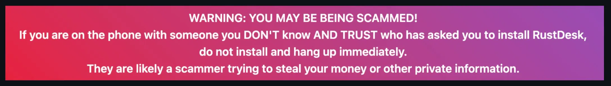
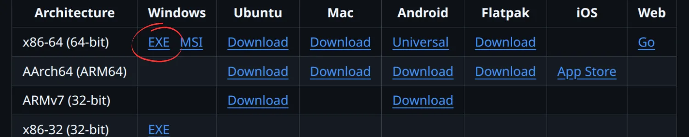
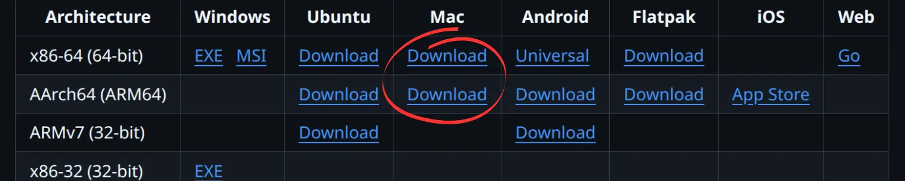
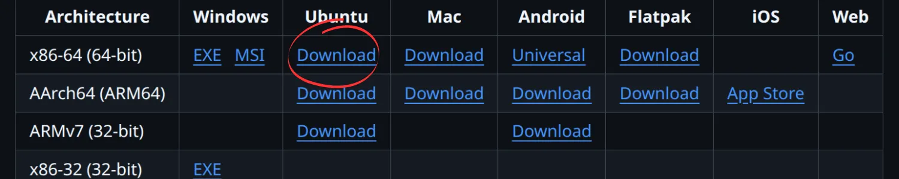
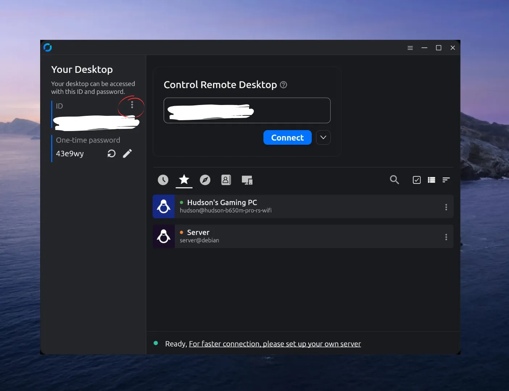
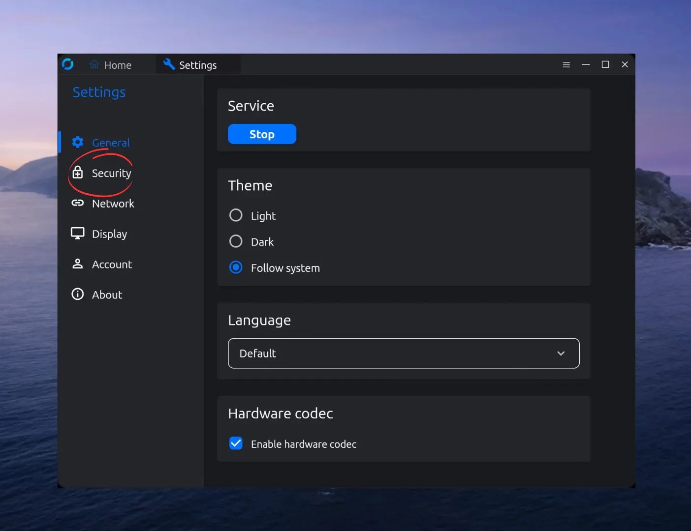
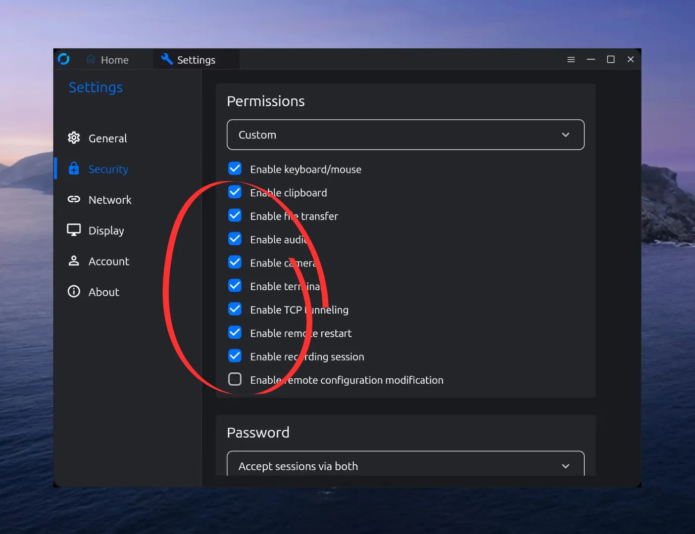
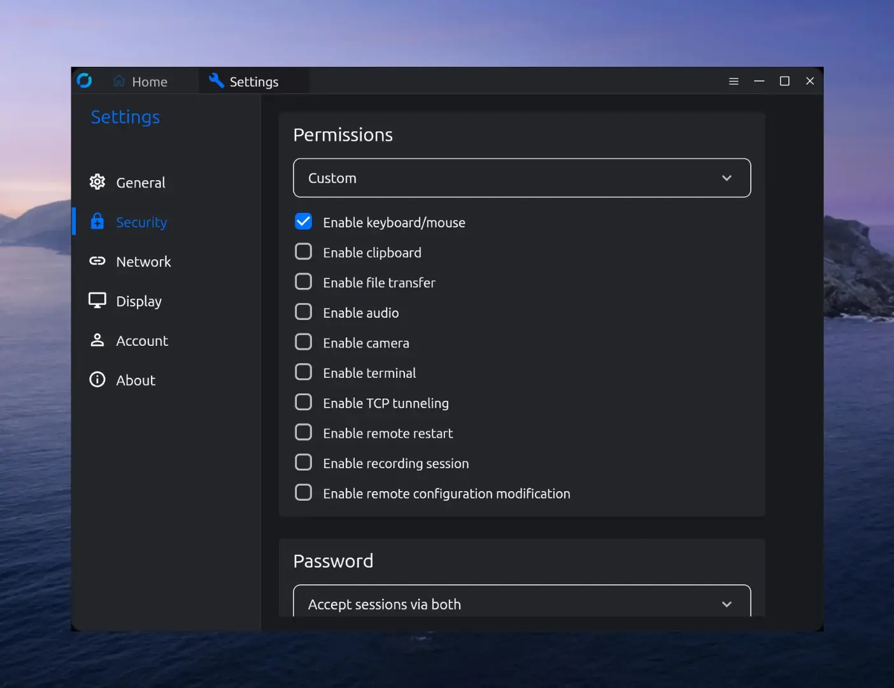
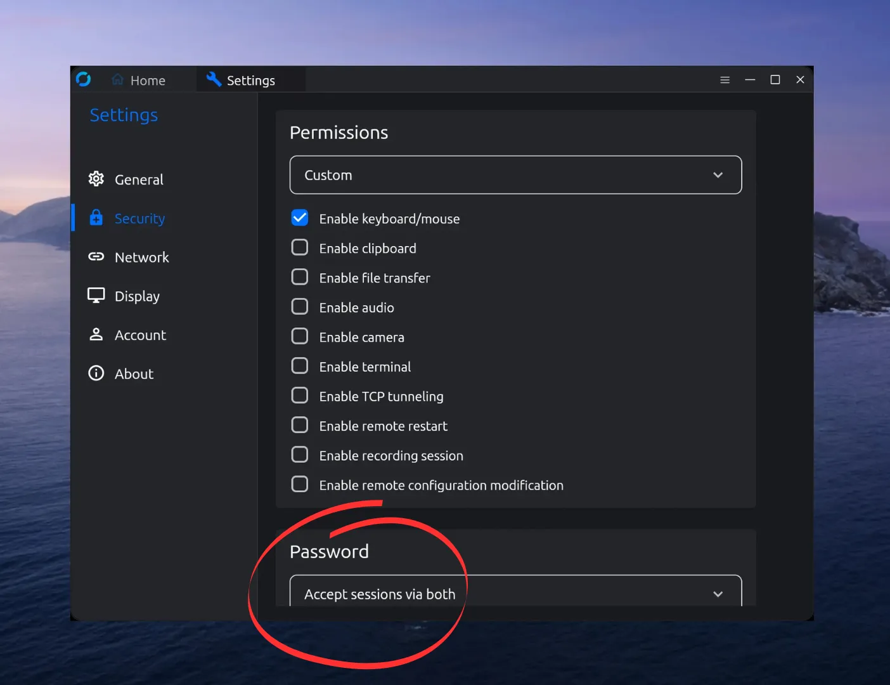
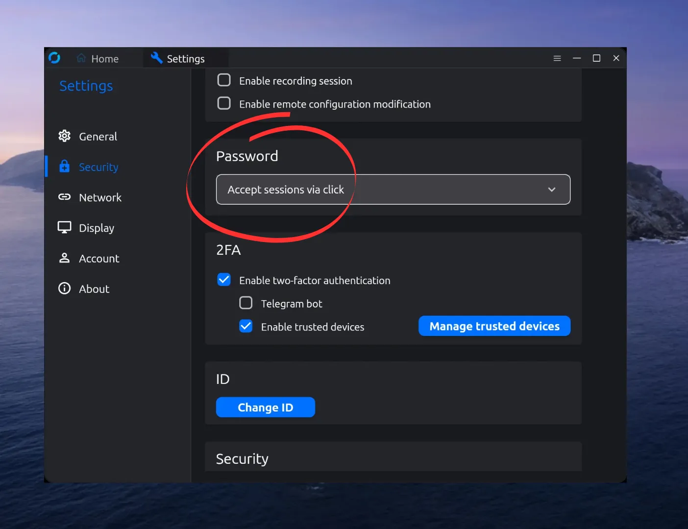

Follow these steps to connect securely while staying in full control.
Addressing the warning
RustDesk will have a warning above all the download options, this is correct, Remote support tools can be powerful, which is why we take extra steps below to ensure you stay fully in control at all times.

Step 2 - Select the right download option for you!
The download you need depends on a few things, but generally speaking,
use these defaults:
Windows:

MacOS:
Depending if you are on Apple Silicon M1, M2, M3 etc, you will want the bottom option, otherwise choose the top download

Linux:
This entirely depends on your distro, but this will work for most users

Step 3 - Install!
Now that you have downloaded the file, go ahead and install the package!
Step 4a - Optional Extra Security
Go ahead and open RustDesk, and we will begin the process of making sure you are only giving the most
basic permisions that still allow us to help you, while keeping you safe!
To start, click on the the vertical dots to open settings

Step 4b
Now that you are in the settings page, open up the security tab!

Step 4c
Now uncheck all of the circled settings below

Your settings should look like this:

Step 4d
Scroll down to the 'Password' Settings

Step 4e
Set it to only accept sessions via click
Now that you have completed these security steps, you are safe to continue to step 5!

Step 5 - Getting your code!
Back in the home page on RustDesk, you will see your code
For me to connect, I will need that, so however it is that I contacted you,
send that code to me!
Now at the discussed time, I will try to connect and you will get a popup menu for me to connect,
Accept it and I will see what I can do!